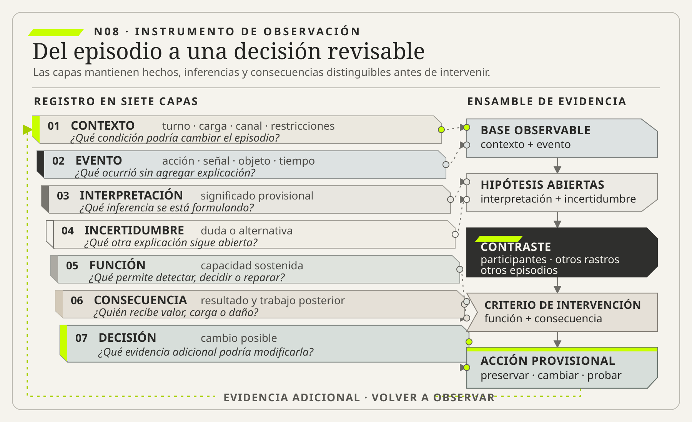

01
01Lucy A. Suchman
OBRA PRINCIPAL UTILIZADAHuman-Machine Reconfigurations: Plans and Situated ActionsCambridge University Press, 2007 · reedición del argumento formulado en 1987

Un procedimiento describe trabajo esperado; no contiene todo el trabajo necesario para producir un resultado bajo condiciones concretas.
Observar el trabajo invisible
Ruta de lectura: problema, distinciones, decisiones, prueba, transferencia y preparación para N09.

Nota. SIN NUM. identifica los aparatos de orientación y referencia que no integran la secuencia argumental.
Seis voces principales para ampliar, contrastar y discutir esta lectura.
01Cambridge University Press, 2007 · reedición del argumento formulado en 1987
 02
02MIT Press, 1995
 03
03NIST AI 600-1, 2024 · equipo coautor
 04
04NIST AI 600-1, 2024 · equipo coautor
 05
05NIST AI 600-1, 2024 · equipo coautor
 06
06NIST AI 600-1, 2024 · equipo coautor
N08 no resume estas fuentes ni las convierte en una receta. Las pone en tensión para construir juicio profesional.
¿Qué parte decisiva de un sistema sólo aparece cuando se deja de mirar el procedimiento y se sigue lo que las personas hacen, esperan, verifican, recuerdan, coordinan y reparan para que el servicio funcione?

Si sólo se modela lo prescripto, se automatiza una ficción.
Durante años, una ciudad costera operó un puente levadizo que conectaba el centro con el puerto. El manual describía una secuencia aparentemente completa: recibir el aviso de una embarcación, detener el tránsito, verificar las barreras, elevar la estructura, confirmar el paso, bajar el puente y reabrir la circulación. El tablero registraba cada estado y el sistema emitía una alarma si un paso ocurría fuera de orden. Para quien observaba desde la oficina de control, el puente era una máquina gobernada por un procedimiento preciso.
Una mañana, un equipo de modernización llegó para estudiar su automatización. Había cámaras, sensores y registros de diez años. El objetivo parecía sencillo: reducir el tiempo de interrupción y retirar decisiones humanas de una operación considerada repetitiva. En la primera reunión, una ingeniera preguntó al operador más antiguo cuánto demoraba el ciclo. “Entre ocho y doce minutos”, respondió. El tablero confirmaba el promedio. La conversación avanzó hacia motores, algoritmos y tolerancias.
Antes de cerrar el relevamiento, una investigadora pidió observar un turno completo. A las 7:40, el operador recibió el primer aviso. No levantó el puente de inmediato. Miró por una ventana lateral, llamó por radio a una trabajadora del muelle y esperó cuarenta segundos. Un remolcador estaba corrigiendo la trayectoria de una barcaza. El sistema sabía que una embarcación se acercaba, pero no podía distinguir si el viento permitiría alinearla a tiempo. El operador evitó cerrar la avenida demasiado pronto.
A las 9:15 ocurrió lo contrario. El aviso llegó tarde y el operador inició la secuencia antes de tener todos los estados en verde. Señaló una bicicleta que avanzaba detrás de un ómnibus, esperó que cruzara y recién entonces completó el cierre. La cámara registraba objetos, pero una columna del puente producía un ángulo ciego. Quien operaba había aprendido a buscar una sombra breve sobre el pavimento. Ese gesto no figuraba en el manual.
Al mediodía, una luz de barrera quedó encendida aunque el brazo ya estaba abajo. El operador no llamó a mantenimiento. Golpeó suavemente la caja con la palma, observó si el indicador cambiaba y anotó el episodio en una libreta. “El sensor falla cuando hay humedad”, explicó. El tablero mostraba una anomalía aislada; la libreta contenía siete casos, todos después de lluvia. El procedimiento exigía detener la operación ante una señal incierta, pero detenerla cada vez habría bloqueado el puerto. La práctica local sostenía continuidad y, al mismo tiempo, ocultaba una deuda de mantenimiento.
La escena más importante ocurrió sin movimiento. Cerca de las 15:00, el operador escuchó una conversación de radio que no estaba dirigida a él. Un barco turístico informaba una demora en el embarque. Sin recibir todavía una solicitud formal, estimó que coincidiría con la salida de escuelas y avisó al centro de tránsito. La ciudad desvió dos líneas de colectivos antes del cierre. La anticipación no redujo el tiempo mecánico del puente; redujo el daño de interrumpir la avenida en el peor momento.
Al final del día, el equipo tenía dos representaciones incompatibles de la misma operación. En la primera, una secuencia de siete pasos transformaba estados de sensores en movimientos. En la segunda, una persona combinaba información incompleta, memoria de fallas, señales visuales, conversaciones periféricas, conocimiento meteorológico y relaciones con otros actores. El procedimiento no era falso. Era una compresión útil de una práctica mucho más rica.
También apareció una tentación: convertir al operador en héroe y conservar cada atajo. Habría sido otro error. Golpear la caja del sensor permitía operar, pero transfería riesgo a una persona y evitaba reparar una falla conocida. Escuchar canales informales anticipaba tráfico, pero dependía de coincidencias y experiencia. Mirar la sombra de una bicicleta era una defensa valiosa, aunque nadie nuevo podía aprenderla si permanecía tácita. El trabajo invisible no debía copiarse sin más. Debía comprenderse función por función.
El proyecto cambió de pregunta. Ya no se trataba de “automatizar siete pasos”, sino de decidir qué capacidades debía conservar el sistema futuro: detectar presencia en puntos ciegos, representar incertidumbre, anticipar impactos urbanos, operar en modo degradado, registrar patrones de falla y permitir que alguien detuviera la secuencia con autoridad real. Algunas capacidades podían trasladarse a tecnología; otras exigían rediseñar procedimientos, sensores, roles y coordinación externa. Varias seguirían necesitando juicio humano.
La historia del puente importa porque muchos sistemas de información se describen del mismo modo: como una aplicación que recibe datos y ejecuta reglas. Sin embargo, el resultado depende de personas que traducen significados, completan contexto, reconocen casos raros, reparan promesas y coordinan con actores que la pantalla no representa. Si sólo se modela lo prescripto, se automatiza una ficción. Si sólo se celebra la adaptación, se institucionaliza precariedad. Observar el trabajo real permite distinguir conocimiento valioso, controles informales, deuda operativa y riesgo acumulado.
Un procedimiento describe trabajo esperado; no contiene todo el trabajo necesario para producir un resultado bajo condiciones concretas. La operación real incorpora variación, interrupciones, coordinación, memoria, interpretación, cuidado y reparación. La diferencia entre ambos no es automáticamente un error ni una virtud: puede ser adaptación experta, defensa informal, restricción de diseño, incumplimiento peligroso o una combinación de esas posibilidades.
Observar profesionalmente consiste en reconstruir qué función cumple cada acción, qué incertidumbre administra, qué evidencia utiliza, qué autoridad requiere y qué consecuencias produce. El propósito no es congelar la práctica actual, sino cambiarla sin destruir las capacidades que hoy mantienen vivo el sistema y sin perpetuar arreglos frágiles o injustos.
N07 mostró que una entrevista no entrega requisitos terminados. Produce afirmaciones situadas que deben contrastarse. Para Hotel Horizonte dejó episodios narrados, explicaciones rivales, rastros esperados y cuatro focos de observación. N08 recibe ese paquete y agrega una fuente distinta: la actividad tal como ocurre. No porque la observación sea “más verdadera” que la conversación, sino porque responde preguntas que una persona puede no recordar, no considerar relevantes, no poder explicar o no sentirse autorizada a mencionar.
Cuando se pregunta cómo se hace un check-in, una recepcionista puede describir el procedimiento oficial. Mientras trabaja, sin embargo, alterna entre el PMS, un correo, una llamada, una planilla y una conversación con Housekeeping. Puede no nombrar esa coordinación porque para ella forma parte del fondo habitual. También puede explicar un atajo sin reconocer el riesgo que genera en otra área. La observación revela secuencias y artefactos; la entrevista recupera significado, intención y experiencia. Ninguna sustituye a la otra.
La relación entre ambas fuentes es productiva cuando genera contraste. Si una persona afirma que siempre verifica una garantía y en tres episodios no lo hace, la conclusión no debe ser “mintió”. Conviene preguntar qué cambió: presión de la fila, confianza en un canal, dificultad de la interfaz, conocimiento del huésped o una regla distinta. La discrepancia abre una hipótesis sobre el sistema.
Ejemplo breve: requisito impecable, sistema equivocado. “Cuando Housekeeping marque una habitación como liberada, el PMS deberá volverla disponible” puede estar técnicamente bien especificado. La observación puede mostrar que “limpieza terminada”, “habitación inspeccionada”, “cerradura operativa” y “habitación asignable” son estados diferentes. Construir correctamente el requisito equivocado automatizaría una ambigüedad.

El procedimiento de llegada en Hotel Horizonte parece lineal: localizar la reserva, verificar identidad y garantía, confirmar habitación, registrar el ingreso y entregar acceso. En una demostración dura dos minutos. Ese recorrido resulta útil para capacitar, probar una interfaz y verificar un caso esperado.
En operación aparecen otras tareas. Recepción busca el correo de una promoción, compara dos identificadores, consulta si una habitación está físicamente lista, explica una diferencia de tarifa, guarda equipaje, decide una excepción, solicita autorización y registra una reparación posterior. Algunas acciones ocurren antes de que el huésped llegue; otras continúan después de que la pantalla muestra “check-in completo”.
La aplicación mide clics y tiempos de respuesta. El huésped vive una promesa: poder ingresar a una habitación adecuada bajo las condiciones acordadas. Entre ambos existe un sistema de trabajo. Si se optimiza sólo la interacción visible, el equipo puede reducir treinta segundos de pantalla y mantener quince minutos de espera, o eliminar una verificación que evitaba entregar una habitación con una restricción.
La observación debe seguir el episodio de principio a fin. El objeto puede ser una reserva, una habitación, una solicitud de asistencia o una reparación. Seguir a una sola persona ofrece profundidad; seguir el objeto a través de roles revela transferencias. Combinar ambas perspectivas evita confundir rendimiento individual con comportamiento del sistema.
Ejemplo breve: operación “completa”. El PMS registra el ingreso a las 15:03. A las 15:18, una recepcionista todavía negocia con Finanzas una garantía rechazada y con Comercial una condición prometida. El evento técnico terminó; la promesa de servicio sigue abierta.
Para observar sin caer en simplificaciones conviene distinguir cuatro planos relacionados.
Trabajo imaginado es la representación que una organización tiene sobre cómo funciona su operación. Vive en presentaciones, tableros, modelos y conversaciones de dirección. Puede ser útil para coordinar estrategia, pero tiende a comprimir excepciones y trabajo informal. Hollnagel (2017) utiliza la diferencia entre trabajo imaginado y trabajo realizado para estudiar cómo los sistemas sostienen resultados bajo variación, no sólo cómo se apartan de una regla.
Trabajo prescripto es lo que procedimientos, roles, reglas y sistemas establecen que debe hacerse. Permite capacitar, distribuir responsabilidades, cumplir normas y auditar. Su limitación no es un defecto accidental: ningún procedimiento puede describir todas las combinaciones de contexto.
Suchman (2007) permite precisar esa limitación. Un plan orienta y ofrece recursos para actuar, pero no determina por anticipado cada acción situada. Comparar procedimiento y práctica no enfrenta una representación inútil con una realidad auténtica. Examina cómo las personas recurren a reglas, señales y recursos cuando la situación concreta exige completar lo que el plan no pudo especificar.
Trabajo realizado es la actividad efectiva bajo recursos, presiones y señales concretas. Incluye decisiones rápidas, esperas, consultas, atajos y reparaciones. No es sinónimo de “lo que hace una persona”; es una configuración distribuida entre participantes y tecnologías.
Trabajo revelado es la versión que una investigación logra reconstruir. Tampoco es la realidad completa. Depende de acceso, muestra, presencia del observador, registros y categorías analíticas. Reconocer esta cuarta capa evita afirmar que una visita breve capturó “cómo realmente funciona todo”.
Los cuatro planos deberían tensionarse entre sí. Si el trabajo realizado se aparta del prescripto, puede requerir corregir la práctica, revisar la regla o rediseñar recursos. Si la dirección imagina un servicio autosuficiente y la observación revela asistencia constante, la estrategia debe incorporar esa dependencia. Si el trabajo revelado contradice a quienes operan, hay que revisar interpretación y poder, no sólo pedir “validación”.
Contraejemplo. En una operación regulada, observar que algunas personas omiten una doble verificación no vuelve opcional el control. La observación puede mostrar por qué se omite y cómo diseñarlo mejor; no convierte una práctica riesgosa en norma legítima.
Una actividad puede ser invisible por varias razones. Algunas tareas ocurren fuera del sistema digital: mirar una fila, escuchar una conversación o mover un objeto. Otras quedan invisibles porque el registro captura el resultado, no el esfuerzo: una habitación reasignada aparece como un cambio de estado, aunque haya exigido seis llamadas. También existe trabajo que la cultura considera “natural”: recordar excepciones, calmar a una persona o ayudar a un colega.
La invisibilidad puede ser temporal. La preparación ocurre antes del encuentro visible y la reparación después. Puede ser organizacional: un área recibe un dato limpio y no ve quién resolvió contradicciones antes de entregarlo. Puede ser política: reconocer una tarea obligaría a admitir carga, dependencia o riesgo. Puede ser técnica: los registros de aplicación capturan eventos, pero no significado, autoridad ni motivo. Star y Strauss (1999) muestran que la visibilidad del trabajo no es neutral: depende de categorías, jerarquías y sistemas que vuelven reconocidas ciertas contribuciones y silencian otras.
Hay al menos seis familias frecuentes:
Nombrar estas familias cambia el diseño. “Eliminar intermediarios” puede suprimir articulación. “Automatizar validación” puede desplazar verificación al final. “Autoservicio” puede transferir cuidado a quien tiene menos información. La mejora debe preguntar quién hará ahora esa función, con qué herramientas y bajo qué autoridad.
Una práctica distinta del procedimiento admite explicaciones rivales. Puede ser un incumplimiento que aumenta riesgo, una adaptación necesaria ante una regla incompleta, un control compensatorio, una innovación local, una costumbre que perdió propósito o una forma de eludir supervisión. La distancia respecto del manual no determina la categoría; importan función, contexto y consecuencia.
Dekker (2014) cuestiona las explicaciones que detienen el análisis en el “error humano”. Nombrar a la última persona que actuó puede describir dónde se volvió visible el resultado, pero no explica por qué esa acción parecía razonable, posible o necesaria dentro del sistema. El análisis debe avanzar desde quién se equivocó hacia las condiciones que organizaron atención, información, presión y autoridad.
Si el turno noche comparte una credencial, la práctica preserva continuidad cuando el alta de usuarios demora. A la vez, destruye trazabilidad y facilita abuso. Celebrarla como resiliencia perpetuaría una exposición. Bloquearla sin resolver provisión de acceso podría detener el hotel. La intervención responsable conserva la capacidad de operar de noche y reemplaza el mecanismo riesgoso de la credencial compartida por identidad individual y contingencia gobernada.
La deriva aparece cuando pequeñas adaptaciones razonables se acumulan hasta alejar al sistema de sus defensas. Cada excepción parece localmente aceptable: una verificación se omite por urgencia, luego por confianza y finalmente por costumbre. El resultado no suele provenir de una decisión irresponsable aislada, sino de presiones, incentivos y éxitos previos que normalizaron el riesgo.
Por eso conviene estudiar tanto éxito como falla. Si cientos de operaciones con una defensa debilitada terminan bien, el equipo puede interpretar ausencia de incidentes como evidencia de seguridad. La observación debe identificar qué condiciones permitieron el éxito y si seguirán presentes. Un sistema puede funcionar gracias a una supervisora experta, horas extra y baja demanda; esa configuración no necesariamente escala.
Prueba funcional de una adaptación. Antes de conservar o retirar una práctica, responder: ¿qué detecta?, ¿qué decisión permite?, ¿qué excepción absorbe?, ¿qué evidencia conserva?, ¿quién confía en ella?, ¿qué riesgo introduce? y ¿cómo trasladar su función sin trasladar ese riesgo?
HH-07 entregó cuatro focos para Hotel Horizonte: qué ocurre entre consultar un estado y decidir, qué verificaciones quedan fuera del PMS, qué coordinaciones no aparecieron en los relatos y por qué una llegada equivalente sigue otra trayectoria. La primera aplicación de HH-08 convierte esos focos en una unidad observable. No seguirá a «los usuarios» en general. Seguirá una reserva desde la llegada hasta que la habitación resulte realmente utilizable o se acuerde una alternativa.
El equipo formula dos explicaciones rivales. La primera sostiene que la demora depende principalmente de la actualización tardía de estados. La segunda propone que aparece cuando distintos roles atribuyen significados y autoridades diferentes al mismo estado. Para distinguirlas no alcanza contar pantallas. Deben registrarse transiciones entre herramientas, consultas, esperas, objeciones y reparaciones. También se elige un episodio de contraste: una llegada con estados parecidos que terminó rápido. HH-08 comienza así con una decisión de observación, no con una visita abierta para «ver qué pasa».

Mucho trabajo invisible consiste en hacer que otros trabajos encajen. Avisar, traducir, esperar, verificar, insistir y reparar no siempre transforman directamente el objeto, pero permiten que el servicio continúe. Strauss (1988) denomina articulación al trabajo que coordina tareas distribuidas y recompone planes frente a contingencias. Suele aparecer entre responsabilidades formales y clasificarse como demora o comunicación innecesaria, aunque sin él la operación no cierre.
Una transferencia no consiste sólo en mover datos. Incluye una promesa sobre significado, prioridad, oportunidad y responsabilidad. “Habitación liberada” puede indicar limpieza terminada para Housekeeping y disponibilidad comercial para Recepción. Aunque el mensaje llegue sin error, la coordinación falla si ambos interpretan estados distintos.
La cognición también está distribuida. Hutchins (1995) muestra que recordar, interpretar y decidir puede depender de una configuración compuesta por personas, representaciones y entorno. Parte del conocimiento vive en participantes; otra parte, en carteles, colores, listas, orden espacial, alarmas y objetos. Una nota pegada puede parecer desprolija y funcionar como memoria externa. Eliminarla exige comprender qué recordaba, cuándo y para quién. Digitalizar el texto sin preservar visibilidad o contexto puede empeorar el control.
Las interrupciones merecen el mismo análisis. Algunas fragmentan trabajo y crean errores. Otras son mecanismos de alerta o acceso a autoridad. Una política de “cero interrupciones” puede silenciar señales críticas. La pregunta no es cuántas existen, sino qué incertidumbre transportan, qué urgencia tienen y qué canal necesitan.
Ejemplo breve: llamada repetida. Housekeeping llama tres veces a Recepción. Un análisis de eficiencia propone eliminar llamadas mediante notificaciones. La observación descubre que la tercera llamada no repite un estado: comunica que una habitación técnicamente limpia no debe asignarse por olor persistente. El rediseño necesita representar una restricción cualitativa, no sólo acelerar el mensaje.
El trabajo invisible no está compuesto únicamente por tareas omitidas en el procedimiento. También incluye una corriente de microdecisiones: elecciones pequeñas, situadas y muchas veces no registradas que permiten que el sistema siga funcionando. Una persona decide esperar antes de confirmar, consultar a alguien que formalmente no interviene, reinterpretar una categoría, priorizar una excepción o postergar una actualización. Cada decisión parece menor. En conjunto, determinan calidad, seguridad, equidad y capacidad de recuperación.
Observar estas microdecisiones no significa exigir que todo sea aprobado por una jerarquía. Significa reconstruir tres elementos: qué incertidumbre enfrentó la persona, qué autoridad real tenía para resolverla y qué consecuencias podía anticipar. La autoridad formal puede estar escrita en un manual; la autoridad operativa aparece en la práctica. A veces coinciden. Otras veces, quien posee la información no puede decidir, quien puede decidir no está disponible y quien finalmente actúa absorbe un riesgo que la organización no reconoce.
En Hotel Horizonte, una recepcionista descubre que la habitación 512 figura como disponible, pero recuerda que Mantenimiento informó una falla intermitente en la cerradura. El PMS permite asignarla. La política comercial premia minimizar la espera. La supervisora está atendiendo otra situación. La recepcionista puede bloquear la habitación, llamar, ofrecer una alternativa o confiar en el sistema. La pantalla contiene un estado; la práctica exige construir una decisión bajo presión. Si luego todo sale bien, esa decisión puede desaparecer de los registros. Si sale mal, el análisis retrospectivo puede presentarla como incumplimiento individual.
Weick y Sutcliffe (2015) estudian organizaciones que sostienen confiabilidad mediante atención a señales débiles, sensibilidad a la operación y resistencia a explicaciones simples. En N08, ese lente evita tratar una duda, una llamada o una demora breve como ineficiencia automática. También impide romantizar cada precaución: una señal débil exige interpretación, contraste y capacidad de escalar, no obediencia ciega.
Una observación rigurosa pregunta qué señales estaban disponibles, cuáles eran confiables, qué costo tenía verificar y qué posibilidad real existía de escalar. También examina si la persona podía detener el flujo sin ser penalizada. Decir que alguien “tenía que consultar” no alcanza si el canal demora veinte minutos y la fila sigue creciendo. Decir que “debía seguir el sistema” tampoco alcanza si la organización sabe que ciertos estados llegan tarde. La conducta sólo puede interpretarse dentro de las condiciones que la hicieron razonable, riesgosa o inevitable.
Las microdecisiones acumulan deuda operativa cuando resuelven hoy una contradicción que volverá mañana. No se trata de deuda técnica en sentido estricto, aunque puede relacionarse con ella. Es el costo futuro producido por depender de memoria, disponibilidad extraordinaria, contactos personales, horas extra o verificaciones manuales para sostener una capacidad. La organización obtiene continuidad inmediata a cambio de fragilidad diferida.
Un ejemplo sencillo es la lista privada que una supervisora mantiene para recordar qué habitaciones requieren doble verificación. La lista reduce incidentes, pero el conocimiento queda atado a una persona. Cada nuevo caso aumenta la carga; cada ausencia expone el sistema. El problema no es que la lista sea informal. El problema aparece cuando la organización consume su beneficio sin reconocer la función que cumple, sin distribuir el conocimiento y sin diseñar una alternativa sostenible.
La deuda operativa puede detectarse mediante señales indirectas:
Ninguna señal demuestra por sí sola un defecto. Una coordinación personal puede ser eficiente y legítima. Una lista local puede ser la mejor solución proporcional. La cuestión es si el mecanismo resulta visible, gobernable y reemplazable; si conserva evidencia; si distribuye o concentra riesgo; y si puede sostenerse bajo ausencia, mayor demanda o cambio tecnológico.
Esta distinción importa al diseñar automatización. Una herramienta puede ejecutar la acción visible y omitir la microdecisión que la hacía segura. Si un asistente de IA redacta respuestas a huéspedes, quizá reproduzca el contenido del mensaje pero no advierta cuándo una promesa comercial contradice capacidad operativa. Si recomienda asignaciones, puede optimizar ocupación y borrar el criterio informal con el que Recepción evitaba ubicar a una persona con movilidad reducida lejos del ascensor. Automatizar la superficie sin modelar la función puede acelerar daño y reducir la posibilidad de que alguien lo detecte.
Por eso, antes de automatizar conviene registrar al menos cuatro preguntas. Primera: ¿qué decisión toma realmente la persona, más allá de la acción visible? Segunda: ¿qué señales y conocimientos utiliza, incluidos los que no están digitalizados? Tercera: ¿qué autoridad, objeción o reparación conserva? Cuarta: ¿qué evidencia permitiría detectar si la automatización desplazó carga o riesgo hacia otro actor? Estas preguntas convierten la observación en insumo de diseño y gobernanza.
La respuesta no consiste en documentar cada juicio hasta paralizar el trabajo. Consiste en identificar decisiones cuyo error puede afectar una promesa, un derecho, dinero, seguridad o continuidad. Allí conviene hacer explícitos criterios, límites y escalamiento. En decisiones locales y reversibles puede bastar una señal y un responsable cercano. En decisiones críticas, la observación debe alimentar controles más fuertes: revisión, trazabilidad, contingencia y capacidad de detener.
Prueba de deuda operativa. La prueba supone que mañana falta la persona más experimentada, se duplica la demanda y falla el canal informal más utilizado. ¿Qué capacidad desaparece primero? ¿Qué decisiones quedan sin dueño? ¿Qué errores dejan de detectarse? La respuesta revela dónde el sistema depende de trabajo invisible que todavía no convirtió en capacidad organizacional.
La unidad más útil no siempre es una tarea. Puede ser un episodio: una llegada, una cancelación, un cambio de habitación o una medicación. El episodio conecta condiciones iniciales, señales, interpretaciones, decisiones, acciones, resultado y reparación. Permite comparar casos sin convertir a una persona en unidad causal.
Un registro robusto separa al menos tres capas. La descripción consigna lo observable: “a las 14:12 abre el correo de campaña”. La interpretación propone significado: “busca una condición no disponible en el PMS”. La pregunta conserva incertidumbre: “¿esa información siempre se recibe por correo?”. Mezclar las capas fabrica certeza prematura.
También conviene registrar objetos y transiciones: qué documento aparece, qué identificador cambia, cuándo se pasa de pantalla a teléfono, quién autoriza y dónde queda el resultado. Los tiempos deben distinguir procesamiento, espera, interrupción y retrabajo. Un promedio único borra mecanismos diferentes.
Para comparar episodios, puede construirse una matriz con contexto, demanda, señales, adaptación, defensa, resultado y costo posterior. Dos casos con igual duración pueden tener calidad opuesta: uno tarda quince minutos porque previene daño; otro, porque repite información perdida. Dos casos de dos minutos pueden ser uno eficiente y otro apresurado.
La observación de una persona aporta profundidad sobre habilidades e interrupciones. Seguir el objeto transversalmente muestra dependencias. La indagación contextual de Beyer y Holtzblatt (1997) propone estudiar actividad y entorno en situación. Una estrategia razonable alterna acompañamiento focal, reconstrucción guiada del episodio y contraste con rastros digitales. La combinación se decide por la pregunta, no por una receta.
N06 ya estableció que una muestra se justifica por las diferencias capaces de cambiar una decisión. N08 aplica ese principio a situaciones observables. Observar “cinco usuarios” no define una muestra útil. La selección debe representar condiciones que podrían cambiar la explicación: turno, nivel de experiencia, canal, demanda, tipo de huésped, desenlace, necesidad de asistencia, incidente y funcionamiento ordinario.
Los casos excepcionales ayudan a descubrir mecanismos, pero estudiar sólo crisis exagera fragilidad. Los casos exitosos muestran defensas cotidianas. Comparar un episodio adverso y uno favorable bajo condiciones similares puede revelar una diferencia pequeña: una señal visible, una relación de confianza o una política clara.
La duración tampoco garantiza calidad. Ocho horas en un turno homogéneo pueden aportar menos variación que cuatro episodios elegidos deliberadamente. La muestra debe declarar qué no cubrió: noche, temporada alta, determinada población o modo degradado. Esos huecos limitan conclusiones y se convierten en condiciones de revisión.
Puede cerrarse provisionalmente una ronda cuando los mecanismos relevantes se repiten en los contrastes previstos, cuando existe evidencia suficiente para elegir la siguiente prueba o cuando observar más tiene menor valor que intervenir de manera reversible. Cerrar no significa conocer todo. Significa saber lo suficiente para la decisión actual y conservar incertidumbre residual.
Una ficha de observación útil evita convertir notas en una crónica imposible de analizar. Puede contener:
| Capa | Qué registra | Pregunta de control |
|---|---|---|
| Contexto | turno, carga, canal, restricciones | ¿Qué condición podría cambiar el episodio? |
| Evento | acción, señal, objeto y tiempo | ¿Qué ocurrió sin agregar explicación? |
| Interpretación | significado provisional | ¿Qué inferencia se está formulando? |
| Incertidumbre | duda o alternativa | ¿Qué otra explicación sigue abierta? |
| Función | capacidad sostenida | ¿Qué permite detectar, decidir o reparar? |
| Consecuencia | resultado y trabajo posterior | ¿Quién recibe valor, carga o daño? |
| Decisión | cambio posible | ¿Qué evidencia adicional podría modificarla? |
La ficha no obliga a registrar cada movimiento. Selecciona eventos relevantes para la pregunta. Si el objetivo es comprender discrepancias de habitación, importa cuándo surge cada estado, qué fuente se consulta, quién interpreta y qué ocurre después. Registrar la duración de cada clic puede agregar precisión sin significado.
Después del campo, las notas se contrastan con participantes y otros rastros. La devolución permite corregir hechos y agregar razones, pero no otorga a una persona autoridad exclusiva sobre el análisis. Un actor puede conocer profundamente su tarea e ignorar consecuencias aguas abajo. La interpretación se sostiene mediante pluralidad y trazabilidad.

Durante una llegada en Hotel Horizonte, la observadora registra: «15:04, Lucía abre el PMS, mira la fila, consulta una planilla y llama a Housekeeping». Ese enunciado pertenece a la capa descriptiva. «Lucía no confía en el PMS» sería una interpretación todavía prematura. La pregunta preservada es otra: «¿qué diferencia esperaba encontrar en la planilla y qué habría hecho si ambas fuentes coincidían?».
La ficha HH-08 agrega contexto, señal, decisión, función, consecuencia y fuente. También registra lo que no pudo verse: una conversación previa, el criterio con el que Housekeeping marcó el estado y la condición comercial prometida. Al contrastar después el episodio con Lucía, aparece que la planilla no reemplaza al PMS. Conserva una restricción temporal que desaparece al cerrar un ticket. La observación cambió la hipótesis, pero no alcanza todavía para estimar recurrencia ni para declarar que toda planilla local cumple la misma función.

Supervisión humana sin tiempo, información, autoridad y alternativa es una ficción.
Una observación no se vuelve requisito de manera automática. Primero debe formularse una afirmación: bajo ciertas condiciones, una práctica cumple determinada función y produce ciertos efectos. Luego se buscan episodios que la fortalezcan o debiliten. Recién después se decide qué preservar, reemplazar o experimentar.
La tradición sociotécnica de Trist y Bamforth (1951) aporta una advertencia que sigue vigente: cambiar la organización técnica transforma relaciones, autonomía, coordinación y experiencia laboral. Por eso el rediseño no puede optimizar un componente y tratar el resto como contexto estable. La intervención debe comparar alternativas técnicas y organizacionales como configuraciones conjuntas.
Si Recepción consulta una planilla antes de asignar una habitación, “eliminar la planilla” es una solución prematura. Puede formularse: la planilla aporta un estado más fresco que el PMS; o representa una definición diferente; o permite que Housekeeping conserve control; o funciona como respaldo ante caídas. Cada hipótesis exige evidencia y conduce a diseños distintos.
La traducción a diseño puede producir:
Un buen requisito conserva la función observada. “Ante discrepancia entre estados, el sistema debe mostrar fuente, momento y autoridad, impedir confirmación automática y ofrecer escalamiento autorizado” es más verificable que “integrar Housekeeping con PMS”. El primero representa incertidumbre; el segundo puede sincronizar contradicciones.
Contraejemplo. Copiar exactamente una práctica actual tampoco es rigor. Si una persona reconstruye datos mediante tres llamadas porque no existe una fuente confiable, digitalizar las tres llamadas como flujo obligatorio institucionaliza el defecto. La función a preservar es validar procedencia y significado, no la forma accidental de hacerlo.
La calidad de la evidencia depende de la relación de observación. Si las personas creen que cada atajo se utilizará para evaluarlas, mostrarán el procedimiento oficial y ocultarán exactamente aquello que la investigación necesita comprender. Informar propósito, uso de datos, acceso, conservación y posibilidad de detener no es sólo ética; es condición metodológica.
La voluntariedad debe ser real. En relaciones laborales, aceptar la presencia de un observador puede sentirse obligatorio. Conviene minimizar datos personales, evitar grabación cuando no sea necesaria y separar aprendizaje sistémico de desempeño individual. No debe prometerse anonimato si el contexto permite identificar a la persona.
El observador tampoco es neutral. Pertenecer a Tecnología, Dirección o consultoría modifica lo que se muestra y lo que se calla. Registrar esa posición ayuda a interpretar. La presencia puede alterar conducta; el efecto no desaparece por quedarse más tiempo, pero puede reducirse mediante confianza, repetición y triangulación.
Si aparece riesgo inmediato, el protocolo debe indicar cuándo intervenir. Investigar no justifica observar pasivamente un daño evitable. La intervención cambia el episodio y debe documentarse. Comprender una adaptación peligrosa tampoco significa tolerarla: se crea una alternativa segura y se gestiona la transición.
La devolución final debería incluir no sólo conclusiones, sino qué se observó, qué no pudo observarse, qué interpretaciones siguen abiertas y cómo se utilizarán. Hacer visible el límite evita convertir un recorte en sentencia sobre personas o áreas.
Después de comprender categorías pueden medirse frecuencia, tiempo y distribución. Definir antes qué cuenta evita que los registros capturen únicamente lo fácil. Una espera puede provenir de procesamiento, dependencia externa, falta de autoridad o cuidado deliberado. Sumarlas bajo “tiempo improductivo” destruye explicación.
El promedio también puede ocultar extremos. Si el ingreso medio dura cuatro minutos, los casos de treinta pueden concentrarse en huéspedes internacionales, promociones o situaciones que requieren ayuda adicional. La dispersión revela inequidad y fragilidad. Interesa quién realiza el trabajo, en qué horario y qué tareas aparecen después del evento visible.
La medición cambia conducta. Cuando un indicador se usa para desempeño individual, las personas pueden cerrar casos antes, evitar excepciones o trasladar trabajo fuera del registro. Por eso la observación debe seguir el efecto de la métrica. Un tablero no es una ventana neutral: distribuye atención e incentivos.
El ciclo más sólido alterna cualitativo y cuantitativo. La observación construye categorías; los datos estiman alcance; los patrones inesperados devuelven al campo. Una cifra no reemplaza el episodio y una anécdota no estima prevalencia. Juntas permiten formular decisiones proporcionales.
En 2026, muchas organizaciones incorporan asistentes generativos, recomendadores y automatizaciones sin eliminar la tarea completa. Gmyrek et al. (2025), para la Organización Internacional del Trabajo, muestran que la transformación de tareas es más probable que la sustitución total en numerosos empleos expuestos. Esa transformación crea trabajo nuevo: formular instrucciones, revisar resultados, recuperar contexto, detectar errores, explicar decisiones, escalar excepciones y reparar impactos.
Una herramienta puede reducir el tiempo de redactar un mensaje y aumentar el tiempo de verificar hechos. Puede atender consultas simples y concentrar en personas casos emocionalmente complejos. Puede recomendar una habitación y trasladar al operador la responsabilidad de descubrir una restricción que el modelo no representa. Medir sólo velocidad de generación oculta este trabajo.
El perfil de IA generativa de NIST, elaborado por Autio et al. (2024), plantea que la gestión del riesgo exige comprender contexto, actores, impactos y supervisión. En operación, “hay una persona revisando” no demuestra control. La supervisión exige tiempo, información, competencia, autoridad para contradecir y una alternativa real. Si la persona debe aceptar para cumplir una meta, desconoce la procedencia o no puede detener el flujo, su presencia es decorativa.
La encuesta de Milanez, Lemmens y Ruggiu (2025) para la OCDE muestra que quienes gestionan organizaciones asocian estas herramientas con mejoras de decisión, pero también informan problemas de responsabilidad poco clara, dificultad para seguir la lógica y protección insuficiente de la salud laboral. Observar estos sistemas implica seguir qué decisiones se delegan, qué métricas presionan, cómo se gestionan desacuerdos y quién absorbe la falla. Contar clics de aceptación no informa confianza calibrada ni calidad.
También hay errores invisibles porque nadie los detecta. Los registros de incidentes sólo contienen fallas reconocidas. Se necesitan muestras independientes, auditorías, canales de afectados y seguimiento posterior. Si un asistente conversacional produce una cancelación incorrecta que el huésped resuelve por otro canal, el sistema puede registrar una conversación cerrada y perder el daño.
Ejemplo breve: asistente de recepción. La IA propone compensar con desayuno una habitación no disponible. Lucía corrige la respuesta porque la reserva ya incluía desayuno y ofrece traslado. El tablero atribuye ahorro de redacción a la IA; la observación revela conocimiento contractual, cuidado y autoridad de reparación. Automatizar el texto no automatizó la decisión.
En Hotel Horizonte, HH-08 sigue la habitación 512. Housekeeping la marcó como “lista” a las 14:38. Mantenimiento había abierto a las 13:55 un registro por una pérdida intermitente en el baño, pero no realizó el bloqueo en el PMS. A las 15:02 se asignó la habitación. A las 15:40 el huésped llamó por agua en el piso. Fue trasladado; Housekeeping recibió inicialmente el reclamo como si hubiera liberado de manera incorrecta.
El procedimiento permite construir una historia simple: Housekeeping declaró un estado equivocado. La reconstrucción de principio a fin muestra tres flujos. Housekeeping informó limpieza terminada. Mantenimiento registró un riesgo en otra herramienta. Recepción interpretó “lista” como asignable. Ninguna persona veía el conjunto y ninguna aplicación representaba la diferencia entre limpieza, inspección, restricción técnica y disponibilidad comercial.
La observación de casos siguientes revela trabajo invisible. Una supervisora de Housekeeping consulta verbalmente tickets cuando reconoce cierto tipo de reparación. Recepción llama a Mantenimiento si la habitación estuvo fuera de servicio el día anterior. El turno noche conserva una lista manual de restricciones. Estas adaptaciones reducen daño, pero dependen de memoria, relaciones personales y coincidencia de horarios.
Retirar las listas y llamadas porque “la integración lo resolverá” sería prematuro. Primero hay que definir qué evento crea una restricción, quién puede declararla, qué estados bloquea, cómo se propaga, qué ocurre en modo degradado y quién repara una discrepancia. La integración es un medio; la capacidad buscada es evitar que una promesa comercial avance cuando el sistema completo no puede sostenerla.
El plan HH-08 sigue doce habitaciones con registros de mantenimiento, compara episodios exitosos y fallidos, observa el cambio de turno, reconstruye tiempos entre herramientas y ensaya una señal común. La condición de salida no es “la interfaz funciona”, sino que los actores pueden distinguir limpieza, aptitud técnica y asignabilidad, y que una restricción relevante no se pierde aunque una integración falle.
Un hospital evalúa eliminar una doble verificación manual mediante código de barras. El procedimiento parece redundante: escanear paciente, medicamento y orden debería impedir errores. La observación muestra que enfermería usa la verificación para detectar cambios de dosis, pacientes trasladados, envases similares, órdenes desactualizadas y condiciones que el código no representa.
El escáner puede fortalecer identificación y trazabilidad. También puede validar el código correcto en un contexto equivocado o fallar en modo degradado. Si las alertas son excesivas, aparece fatiga y la confirmación se vuelve automática. Si la interfaz demora, surgen preescaneos o registros posteriores. Clasificar esos desvíos como resistencia pierde la oportunidad de comprender el sistema.
La transferencia no consiste en copiar soluciones del hotel. El dominio clínico exige evidencia, autoridad y seguridad más estrictas. Sí puede transferirse un criterio: seguir el episodio, distinguir estados y significados, formular mecanismos rivales, preservar controles independientes y observar qué trabajo crea la automatización. En ambos casos, el resultado depende de una red sociotécnica y no del funcionamiento aislado de un componente.
Un protocolo proporcional puede organizarse en diez decisiones:
El protocolo no es una receta rígida. Asegura comparabilidad y protección sin impedir seguir un episodio crítico. Puede adaptarse si se declara qué función se conserva. Omitir una grabación puede ser correcto por privacidad; omitir la distinción entre descripción e inferencia debilita toda conclusión.
La observación termina con una devolución y un registro de límites. También debe prever seguimiento después del cambio. Una automatización puede eliminar carga visible y crear monitoreo de excepciones. Comparar antes y después requiere considerar aprendizaje, temporada y cambios externos; atribuir toda diferencia a la herramienta es otra simplificación.

N08 termina con una representación situada de acciones, esperas, transferencias, adaptaciones y reparaciones. Esa representación identifica dónde se produce carga, quién conserva una capacidad y qué condiciones vuelven frágil una promesa. No alcanza todavía para evaluar la experiencia completa de quienes reciben o sostienen el servicio. Ver una interacción no demuestra que el recorrido resulte comprensible, accesible o adoptable para poblaciones diferentes.
La entrega de HH-08 a N09 contiene puntos concretos de contraste: el tramo que la aplicación declara cerrado mientras la promesa sigue abierta, las verificaciones que una persona debe repetir, los canales alternativos, las ayudas requeridas y las excepciones que concentran esfuerzo. N09 podrá seguir ese recorrido y estudiar cómo expectativa, acceso, fricción y adopción distribuyen resultados. N08 no anticipa esos criterios ni convierte una dificultad observada en diagnóstico de experiencia.
La frontera importa porque una práctica puede sostener la operación y perjudicar a quien atraviesa el servicio. También puede parecer ineficiente desde el puesto observado y ser una defensa necesaria para otra persona. El pase a N09 conserva ambas posibilidades: describe el trabajo que se realiza y deja abierta la evaluación de cómo ese trabajo se vive y a quién incluye o excluye.
La consecuencia profesional más seria es atribuir al software o a una persona un resultado producido por relaciones. Esa simplificación conduce a requisitos técnicamente correctos e intervenciones sistémicamente pobres. También distribuye injustamente la responsabilidad: quien ejecuta la última acción visible termina cargando con decisiones de diseño, política o recursos.
Observar con rigor permite formular explicaciones más defendibles. No garantiza neutralidad ni acceso completo. Obliga a declarar posición, muestra, límites y cadena de inferencia. Esa modestia no debilita el análisis; impide que la autoridad del investigador sustituya a la evidencia.
La observación consume tiempo y puede alterar conducta. No accede directamente a intención o significado; necesita conversación. Los eventos raros pueden no ocurrir y las operaciones críticas pueden restringir presencia. Reconstrucciones, simulaciones y registros aproximan el trabajo, pero no deben presentarse como equivalentes.
Comprender una práctica no significa conservarla. Una defensa informal puede distribuir daño, invadir privacidad o depender de sacrificio. Tampoco todo debe permanecer abierto a investigación: una obligación regulatoria o un riesgo inmediato puede exigir acción. La metodología sigue siendo útil para diseñar integración, contingencia y evidencia de cumplimiento.
La transparencia también puede revelar vulnerabilidades o exponer a personas. Los hallazgos necesitan gobierno de acceso y comunicación responsable. La devolución no debe producir un catálogo de culpables, sino una representación de condiciones, mecanismos y alternativas.
Finalmente, ningún estudio agota el trabajo real. La operación cambia cuando cambian demanda, tecnología, personal e incentivos. Por eso el resultado de N08 no es “el mapa verdadero”, sino una explicación provisional suficientemente rica para una decisión y preparada para ser revisada.
El trabajo real contiene búsqueda, coordinación, espera, juicio, memoria, cuidado y reparación que procedimientos y registros técnicos suelen comprimir. La diferencia entre lo prescripto y lo realizado puede expresar conocimiento experto, control compensatorio, deuda operativa o riesgo. Observar no consiste en vigilar personas, sino en reconstruir cómo el sistema produce resultados bajo condiciones concretas.
Una observación defendible sigue episodios, separa descripción de inferencia, cubre variación, triangula fuentes y conecta hallazgos con decisiones. Antes de automatizar una tarea, pregunta qué función cumple y quién la sostendrá después. En sistemas con IA, además, vuelve visible el trabajo humano de verificar, contradecir, explicar y reparar. La meta no es copiar la práctica actual: es transformarla sin destruir capacidades invisibles ni perpetuar arreglos frágiles.
La preparación consiste en responder dos de las seis preguntas y completar una ficha breve para HH-08. La ficha debe incluir unidad observada, contexto, evento, interpretación provisional, pregunta abierta, función sostenida y decisión que podría cambiar.